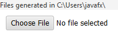
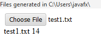
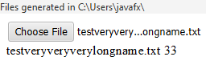

Go to the directory where files were generated:

Modal window with file selection should close, and "test1.txt" text should appear next to "Choose File" button.
Below the button, the name of the file should appear with a non-zero number next to it:

A modal window with file selection should open again.
Go to the directory where files were generated.
Select the "testveryveryverylongname.txt" file.
Modal window with file selection should close, and the following text should now be next to "Choose File" button: "testveryvery...ongname.txt".
The previous text should not be visible.
Below the button, the name of the file should appear with a non-zero number next to it:

A modal window with file selection should open again.
Go to the directory where files were generated.
Try to select two files using left mouse button and Control key.
You should not be able to do that.
Modal window with file selection should close, and the name of the previously selected file should remain next to "Choose File" button.
The text below the button also should not disappear.